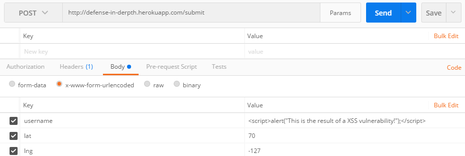
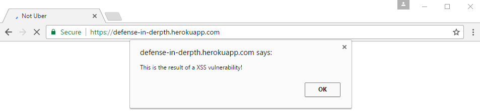
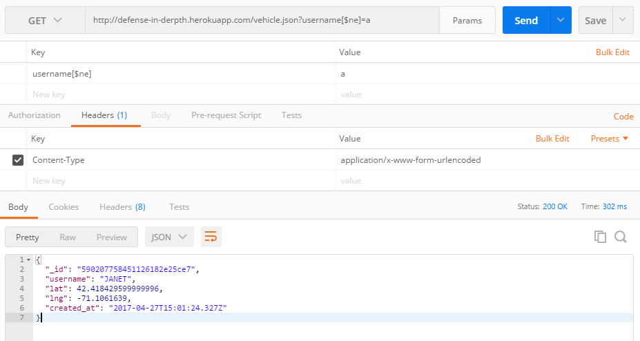
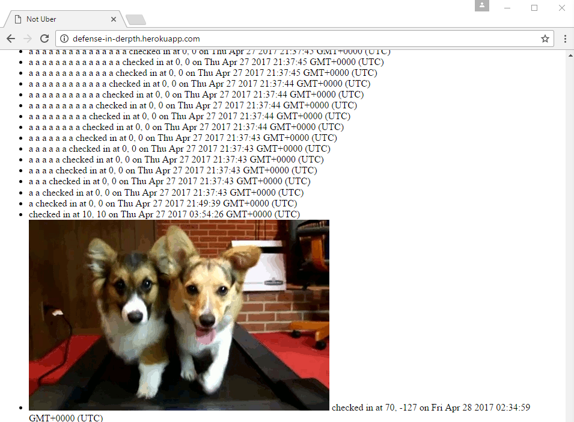

The Black Car Service allows the client (a passenger or a vehicle) to submit their location to a server and view the location of the passengers or vehicles (whichever is opposite of the client's type) who have checked in in the last five minutes. It is the purpose of this report to find, document, and resolve security and privacy issues of this application. My partner's implementation returns an Internal Server Error. As such, this report analyzes Ming Chow's implementation of The Black Car Service.
Methodology
First, I examined the server-side code for the application (server.js). I noticed certain validating checks which the creator had implemented, such as boundary checks for the client-submitted latitude and longitude values. I then used Postman to submit unconventional parameters to the application in order to test the application's handling of unexpected and malicious values.
Abstract of Findings
Provide an overview of all the security and privacy issues you identified. This section should be written for non-technical managers who do not have technical expertise and do not have time to read the entire document. Write this section using lay language.

POSTing the JavaScript to /submit using Postman

JavaScript being executed at homepage
Resolution: User-inputted values should be cleaned of angle brackets to prevent XSS. The symbol < should be changed to < and the symbol > should be changed to >. Examples on how to do this can be found here.
Severity: high as this privacy concern allows the client to see the location of a username which is not their own
Description: Using Postman, I discovered that, when sending the username parameter to https://defense-in-derpth.herokuapp.com/vehicle.json using the GET method, adding [$ne] to the end of the username key will cause the server to return one record which does not have the same username value as the one submitted. To the implementer's credit, he used the findOne() function rather than find(), which limits the number of other users' information I receive to one.

Resolution: In order to prevent MongoDB database injection, the input must be validated. The customer must either use middleware such as or use a library with a wrapper such as Celebrate, as in

Submitted HTML (in this case, a GIF of puppies on a treadmill) is displayed on the homepage
Resolution: User-inputted values for usernames should be validated to be strings which do not contain HTML. If the strings contain special characters not otherwise found in valid usernames, such as < or >, the username should not be considered valid and should therefore not be inserted into the database.
Conclusion
The primary issues associated with this implementation concern client-input validation. We can never trust user input, and therefore every value submitted by the client must be sanitized and validated. The current application validates latitude and longitude values to be within a certain range. This sort of validation should be expanded to the username field, namely by removing special characters, by rejecting usernames with characters not appearing in valid usernames, and/or by whitelisting usernames. Future work should also prevent database injection through the use of middleware or a library. Though adding an additional library would increase the complexity of the application and slow down performance, it is necessary to prevent users from viewing data which is not their own.